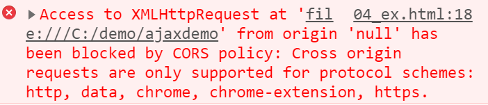
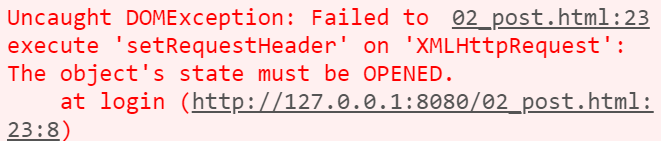
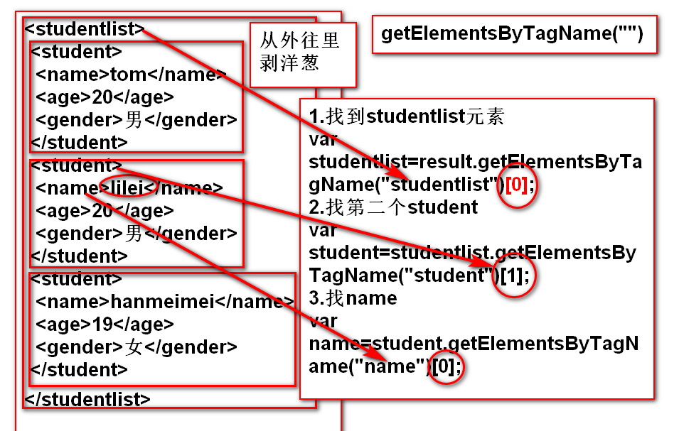

同步和异步
1.同步 Synchronous 在一个任务进行的过程中，不能开启其他任务 同步访问：浏览器在向服务器发送请求时，浏览器只能等待服务器的响应，不能做其他事 出现场合： 1.地址栏输入url，访问页面(网速不好时，更明显) 2.a标签跳转 3.表单提交 2.异步Asynchronous 在一个任务开启时，可以开启其他任务 异步的访问：浏览器在向服务器发送请求时，用户可以再页面上做其他操作 出现场合： 1.用户名重复的验证 2.聊天室 3.百度搜索建议 4.股票走势图
AJAX
1.什么是AJAX？ Asynchronous JavaScript and XML 异步的 js 和 xml 本质： 使用js提供的异步对象， 异步的向服务器发送请求， 并接收响应回来的数据， 异步对象 XMLHttpRequest
<script> //1.创建异步对象 var xhr=new XMLHttpRequest(); console.log(xhr); //2.创建请求，打开链接 xhr.open("method","url",true); //3.发送请求 xhr.send(); //4.获得响应数据 xhr.onreadystatechange=function(){ if(xhr.readyState==4){ //接收响应 var result=xhr.responseText; console.log(result); } } </script>
使用ajax：AJAX请求的步骤
1.创建异步对象XMLHttpRequest var xhr=new XMLHttpRequest(); 这种创建方式，不兼容ie8以下的版本 2.创建请求，打开连接 xhr.open(method,url,isAsyn); method：string类型，请求的方法。比如"get" url：string类型，请求的url。比如"http://127.0.0.1:8080/login" isAsyn：boolean类型，是否才用异步访问的方式去访问服务器 3.发送请求 xhr.send(formdata) 注意：只有post请求的使用，才有请求主体formdata get方法不需要请求主体,所以使用get请求的时候，两种发送请求的写法: xhr.send()或者xhr.send(null) 跨域问题：一定在xz的服务器中，托管静态资源文件夹中，编写html文件。不然会发生跨域问题。 运行此html文件，要使用访问服务器的方式运行，不要使用ctrl+b或者直接双击 //1.创建异步对象 var xhr=new XMLHttpRequest(); //2.打开连接，创建请求 xhr.open("get","http://127.0.0.1:8080/demo/ajaxdemo",true); //3.发送请求 xhr.send(null); 4.接收响应(绑定监听事件) 1.readyState属性 用于表示xhr对象的请求状态，一共5个状态 值： 0：请求尚未初始化 1：已经打开服务器，请求正在发送中 2：接收到响应头 3：接收响应主体 4：接收响应数据成功 只要请求一发送，readyState自动改变 2.status属性 表示服务器的响应状态码 当status为200的时候，表示服务器正确的处理了请求 3.onreadystatechange 监听事件 当xhr.readyState属性值发生改变时，自动激发操作 常见错误： 跨域错误，本地打开的html文件 404： 检查路由，检查接口，检查url，检查目录结构 500： 检查服务器代码 使用get提交，发送带参数的请求(dom) xhr.open("get","url?uname=...&upwd=...",true); post请求 1.post接口 router. post("/login_post",(req,res)=>{ //获取用户名和密码 var $uname=req.body.uname; var $upwd=req.body.upwd; 2.使用post方法提交请求 注意：由于服务器默认接收普通字符 请求主体有特殊字符 需要在发送之前，设置请求头信息，改为发送所有字符 设置的位置，是在open之后，在send之前 //1.创建 xhr对象 var xhr=new XMLHttpRequest(); //4.绑定监听，接收响应 xhr.onreadystatechange=function(){ if(xhr.readyState==4&&xhr.status==200){ var result=xhr.responseText; alert(result); } } //2.打开连接，创建请求 xhr.open("post","/demo/login_post",true); //3.发送请求 //设置请求消息头，修改接收所有字符 xhr.setRequestHeader("Content-Type","application/x-www-form-urlencoded"); var formdata="uname="+uname.value+"&upwd="+upwd.value; xhr.send(formdata);
JSON
1.json 使用ajax访问服务器，服务器连接数据库，把结果通过相应传送给ajax. 前台ajax内部，xhr.responseText得到这个相应数据 这个相应数据的类型，string string放的是数组结构，每一个元素是什么？ 语法： var 对象名称{属性1：值，属性2：值，属性3：值，。。。。} ex:var tom={name:"tom",age:18,gender:"男"} js对象，在属性名称这里是没有双引号 2.JSON的数据格式 JavaScript Object Notation JS 对象 表现方式 js对象表示法，以js对象的数据格式表现出来的字符串 {"uid":1,"uname":"dingding","upwd":"123456"} json 字符串的格式： 1.json中用一对{}来表示一个对象 2.json中的属性，必须用""括起来(写单引号不报错，但是最好用双引号) 3.属性的值是字符串，也要带双引号 4.json的表现是个字符串，所以在最外层加引号(单引号) '{"name":"tom","age":18,"gender","男"}' json数组字符串: var result='[ {"uid":1,"uname":"dingding","upwd":"123456"}, {"uid":2,"uname":"dangdang","upwd":"123456"}, {"uid":4,"uname":"yaya","upwd":"123456"}, {"uid":5,"uname":"tom","upwd":"123456"} ]' 3.把json字符串转换成js对象数组 var arr=JSON.parse(result); arr中，就是一个js对象数组
常见错误
原因：本机开启了另外一个mysql数据库 不是你自己xmapp中的mysql 解决方案：需要在任务管理器中把之前的mysql进程清除。然后重新开启xmapp的mysql 任务管理器，在开始按钮上点击右键打开  设置请求消息头，的代码，放在了open之前或者send之后
XML
1.XML数据格式 XML:eXtensible Markup Language 可扩展 标记 语言 xml是html的一个变种，专门负责承载数据用的 所以操作xml要是用dom xml的标记，是没有被预定过的，需要自定义 xml就是做数据传递，而不是数据显示 2.xml的语法 版本声明： 1.<?xml version="1.0" encoding="utf-8"?> 2.xml只有双标记 3.xml标记允许嵌套，要注意嵌套顺序 4.每个标签都可以自定义属性 5.每个xml文档，有且只有一个根标签 3.使用ajax访问xml数据 <script> function getXML(){ var xhr=new XMLHttpRequest(); xhr.onreadystatechange=function(){ if(xhr.readyState==4&&xhr.status==200){ var result=xhr.responseText; console.log(result); } } xhr.open("get","student.xml",true); xhr.send(null); } </script> 4.xml数据解析，使用dom document.getElementsByTagName(""); 通过标签名，找到一堆元素 不管有几个元素，得到的一定一个数组(类数组) 类数组:只能用下标取数据，不能使用数组的API 解析技巧，从外往里，一层一层剥洋葱 步骤： var result=xhr.responseXML; 此时，result就可以dom解析  最后使用innerHTML可以操作内部的内容ajax项目
新建mypro.js 在app.js中导入挂载 新建静态文件夹 mypro 在app.js中托管 所有接口写在mypro.js中 所有的html下载mypro文件夹中 1.登录功能 post方法 get接口可以使用浏览器验证 post不行 先写一个get接口，浏览器验证正确之后，get改成post